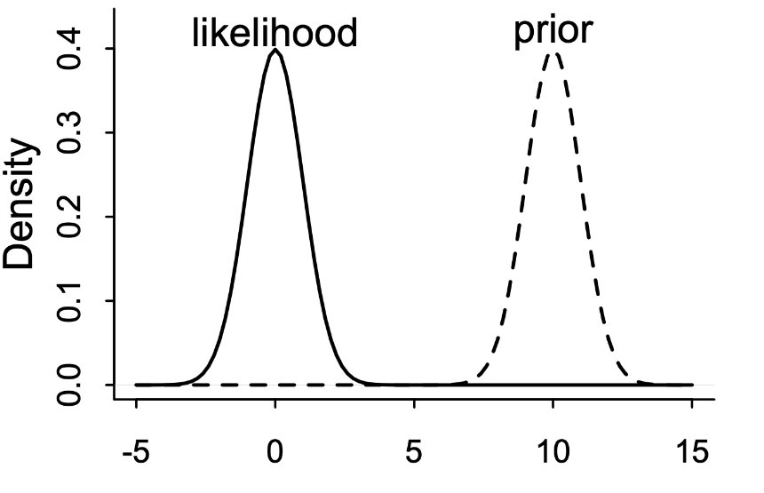
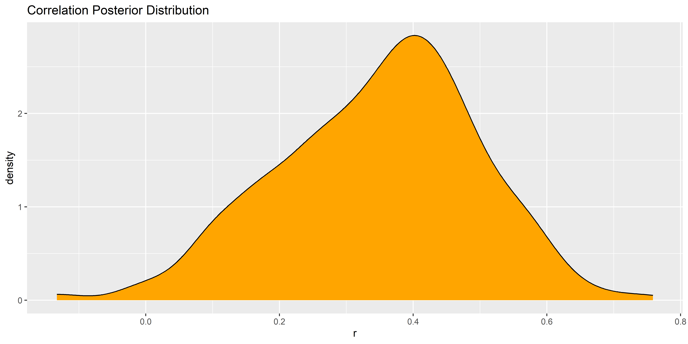

result <- BayesFactor::correlationBF(mtcars$mpg, mtcars$qsec)
resultBayes factor analysis
--------------
[1] Alt., r=0.333 : 4.416463 ±0%
Against denominator:
Null, rho = 0
---
Bayes factor type: BFcorrelation, Jeffreys-beta*6. Posteriors


head(posterior)Markov Chain Monte Carlo (MCMC) output:
Start = 1
End = 7
Thinning interval = 1
rho zeta
[1,] 0.4061366 0.4309760
[2,] 0.4595994 0.4968032
[3,] 0.3391690 0.3531532
[4,] 0.3391690 0.3531532
[5,] 0.5697774 0.6471931
[6,] 0.2361734 0.2407175
[7,] 0.3211367 0.3329140rho and zeta (a transformed version of the correlation coefficient that is not important)plot(posterior)
data <- as.data.frame(posterior)
p <- data |>
ggplot(aes(x=rho)) +
geom_density(fill="purple") +
geom_vline(xintercept=0, linetype="dashed") +
theme_bw() +
labs(x="Correlation Coefficient", y="Probability") +
coord_cartesian(xlim=c(-1, 1))
p
rscale <- 1/3
prior <- data.frame(
y = dbeta(seq(0, 1, length.out=100), 1/rscale, 1/rscale),
x = seq(-1, 1, length.out=100)
)
p +
geom_area(data=prior, aes(x=x, y=y), fill="orange", alpha=.4) +
labs(title="Beliefs about rho before (orange) and after (purple) seeing the data")simulate_results <- function(V1, V2) {
# Initialize dataframes
data_priors <- data.frame()
data_posteriors <- data.frame()
for(rscale in c(0.05, 0.1, 1/sqrt(27), 1/3, 1/sqrt(3), 1)) {
# Prior
prior <- data.frame(
y = dbeta(seq(0, 1, length.out=100), 1/rscale, 1/rscale),
x = seq(-1, 1, length.out=100),
rscale = insight::format_value(rscale)
)
# prior$y <- prior$y / max(prior$y) # Normalize y (for visualization)
data_priors <- rbind(data_priors, prior)
# Compute results
result <- BayesFactor::correlationBF(V1, V2, rscale=rscale)
# Sample posterior
posterior <- as.data.frame(BayesFactor::posterior(result, iterations=2000))
posterior$rscale <- insight::format_value(rscale)
data_posteriors <- rbind(data_posteriors, posterior)
}
# Make plot
ggplot(data_priors, aes(color=rscale)) +
geom_line(aes(x=x, y=y), linewidth=1, linetype="dashed") +
geom_density(data=data_posteriors, aes(x=rho), alpha=.2, linewidth=2) +
theme_bw() +
labs(x="Correlation Coefficient", y="Probability") +
coord_cartesian(xlim=c(-1, 1))
}simulate_results(mtcars$mpg, mtcars$qsec)
simulate_results(mtcars$mpg[1:5], mtcars$qsec[1:5])
idx <- sample(1:32, 250, replace=TRUE)
simulate_results(mtcars$mpg[idx], mtcars$qsec[idx])




ci <- bayestestR::eti(rvals, ci=c(0.50, 0.89, 0.90, 0.95))
plot(ci)
ci <- bayestestR::hdi(x, ci=0.50)
plot(ci)
rez <- bayestestR::pd(rvals)
plot(rez)
rezProbability of Direction: 0.98rez <- bayestestR::rope(rvals, rope=c(-0.1, 0.1))
rez# Proportion of samples inside the ROPE [-0.10, 0.10]:
inside ROPE
-----------
3.59 % plot(rez)
bayestestR::rope(rvals, rope=c(-0.1, 0.1), ci=0.90)# Proportion of samples inside the ROPE [-0.10, 0.10]:
inside ROPE
-----------
1.98 % bayestestR::rope(rvals, rope=c(-0.1, 0.1), ci=0.89)# Proportion of samples inside the ROPE [-0.10, 0.10]:
inside ROPE
-----------
0.45 % mtcars |>
ggplot(aes(x=mpg, y=qsec)) +
geom_point() +
geom_smooth(method="lm")
library(BayesFactor)
report::cite_packages()plot(posterior)
ggplot
data.frame(r=rvals, i=1:length(rvals)) |>
ggplot(aes(x=i, y=r)) +
geom_line() +
labs(title="Trace Plot of the Posterior Distribution")
data.frame(r=rvals) |>
ggplot(aes(x=r)) +
geom_density(fill="orange") +
labs(title="Correlation Posterior Distribution")
plot(hdi(rvals))
y <- c(0.53, 0.67, 0.70, 0.86, 0.92, 0.94, 0)
x <- c(100, 101, 102, 103, 104, 105, 115)
ggplot(data.frame(x=x, y=y), aes(x=x, y=y)) +
geom_point() +
geom_smooth(method="lm", se=FALSE)
cor.test(x, y, method="pearson")
Pearson's product-moment correlation
data: x and y
t = -2.1175, df = 5, p-value = 0.08779
alternative hypothesis: true correlation is not equal to 0
95 percent confidence interval:
-0.9491708 0.1357760
sample estimates:
cor
-0.6875858 Thank you!